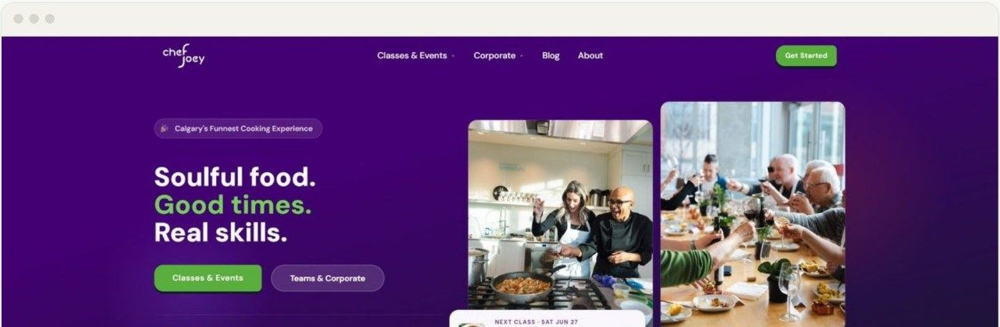
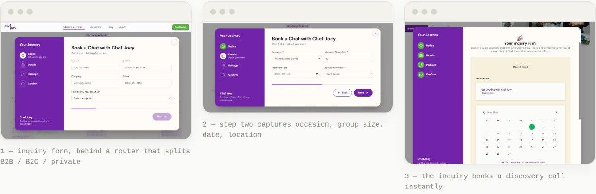
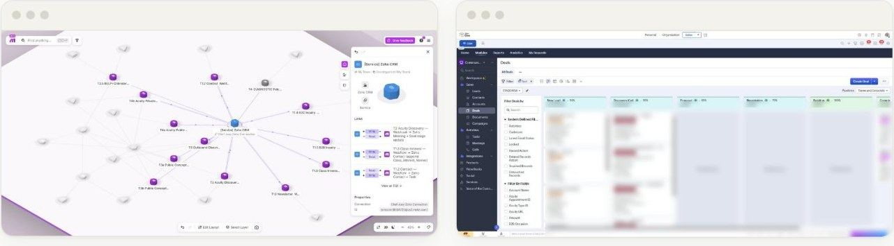

The brief was "more revenue." The first job was deciding which revenue.
A Calgary cooking-experience company sold the easiest thing on its menu, public classes, while the margin sat in corporate events. I pulled the real revenue split out of Stripe, made the case to rebuild the business around corporate, and in about four weeks replaced five disconnected tools with one system two owners run without me. Leads went from about two a week to about fourteen.
Situation
A service business selling its easiest line, with no way to see which line made the money. Chef Joey runs chef-led cooking experiences in Calgary across three revenue lines: public classes, private events and corporate, each in person or virtual. The owners wanted more revenue. The site was basic, inbound was about two class inquiries a week, and nothing was tracked: no CRM, five tools that did not talk to each other, and no way to say which line the money came from. I had never worked in a service business before.
The decision
Before I can say anything useful about a business I need to follow its revenue, and here there was nothing to follow. No CRM, no tracking, five tools that did not talk to each other. So the first job was to pull every transaction out of Stripe and organize it by line: public classes, private events, corporate. That was the first time anyone had seen the split, and it is what started the real conversation with the owner. Corporate was about half the revenue. Did he know that? What was that revenue like to earn? What did he want more of?
Stop optimizing the easiest sale and rebuild around the best one. His answer was that corporate was far better per hour, far less work, and the part he enjoyed most. So the question changed from "how do we get more traffic" to "do you want to build this business around corporate." He said yes. Everything after that is downstream of one decision.
Two constraints shaped the build: it had to run without me, and measurement came before spend. No retainer, and owners who are chefs, not operators, so the system had to be as close to invisible as possible. And if we could not trust the funnel, paid traffic would just make the leak bigger and more expensive.
What I built or changed
What the client runs today: five tools became one record of truth, with a measurement layer that reads from every part of it.
- Webflow site, rebuilt from the ground up for the corporate buyer. I had spent two years inside one of the best organic-search operations in the world at Black & White Zebra. I wrote those rules down as guardrails and built an AI check that held every page to them while it was being built. Search visibility roughly doubled after launch, and the corporate and team-building terms reached the top three.
- Zoho CRM with three pipelines. One record per contact, one pipeline per revenue line, so a corporate inquiry stopped looking like a class booking.
- Automation that makes the system disappear. An owner creates a class once in Acuity. The CRM record, the landing page on the site and the payment flow are created automatically; a customer books and pays, and the booking lands back in Zoho. Built in Make with a dead-letter queue, idempotent upserts and email-on-error alerts: if a sync fails someone finds out, and a replay does not create duplicates.
- Outbound to business accounts. Because the corporate buyer was never going to search for a cooking-class site. Stood up by hand first so I knew it was structured properly, then handed to AI to run the message tests. Early days.
- Measurement layer. One trusted source per metric and a written baseline for each. It is why spend waited, and it is what makes the lead and pipeline numbers on this page checkable.



How it ran
Four weeks to build; the owners were running it unaided in two. The strategy phase moved at the client's pace. The build was about four weeks. I trained both owners on the CRM during the build, not after, and they were working it unaided in about two weeks. The owner reviews the dashboards; the automations alert on error, so action is triggered by an email, not by someone remembering to check. There is no retainer. The client owns the whole system and runs it without me.
What I still watch: a daily uptime, redirect, robots and sitemap check, and a weekly Clarity-based site-health digest covering sessions, conversions and rage or dead clicks. A system no one watches is a system that decays.
Result
Before and after. Lead and pipeline figures are from the client's CRM over May to October 2026, against the four months before launch.
Seven times the leads, mostly corporate, with no paid traffic. Inbound went from about two leads a week to about fourteen, and because the site now sells the corporate offer, most of those are corporate inquiries rather than class sign-ups. Weekly pipeline created went from roughly $2K to roughly $20K. Organic search visibility roughly doubled and the corporate terms rank in the top three. The outbound engine is just starting and has no result to report yet. None of this needed paid traffic.
The build took four weeks. The decision to stop building around the public-class business is what made it work, and that is the part a smaller client usually cannot make alone.
What I'd do differently
Set a decision date on day one, and build for the line the decision chose. I let the strategy phase run at the client's pace, and it stretched. Next time I would set a decision date up front, because the build took about four weeks and the thinking before it took longer than it needed to. The trade-off of no retainer is real too: the client owns the system, which was the point, but it also means the measurement discipline depends on two operators keeping it up without me. The daily and weekly checks are my answer to that; a quarterly review would be a better one.
And I over-built one thing. The automation that turns a new class in the booking tool into a finished landing page, with payment on the site and the record in the CRM, is the most technically satisfying piece of the system and the least necessary. The owners create a new class type a few times a year, and public classes are the line we had just decided to de-emphasize. It works, and I am glad it exists, but the time it took was out of proportion to what it moves, and I spent it on the part of the business the decision had told me to care about least. Next time the question before any build is the one I asked about the offer: which line does this serve, and how much.